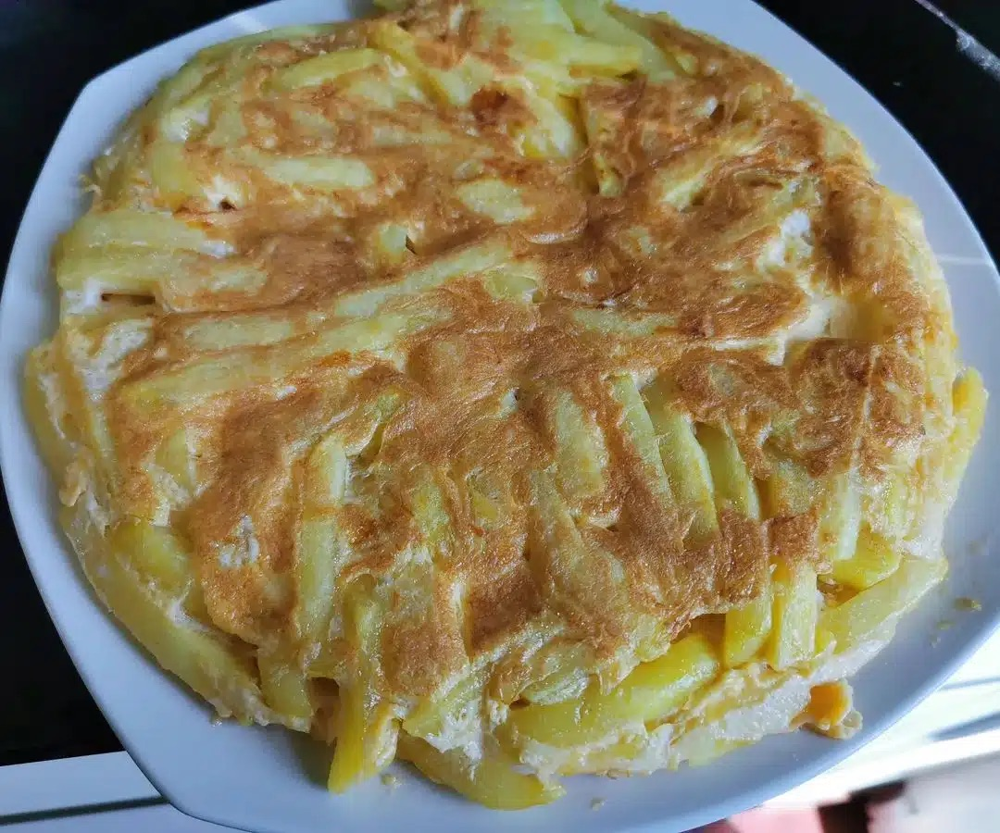

Pilau rice cooked in a well-seasoned broth of beef or chickenrice cooked in a well-seasoned broth of beef or chicken.

Githeri which is a dish that combines beans and corn.

Nyama Choma is grilled goat meat mostly served with Ugali (a form of cornmeal dough commonly made with maize flour).

Chips-Mayai is a combination of omelet and French fries, served with kachumbari and tomato ketchup.